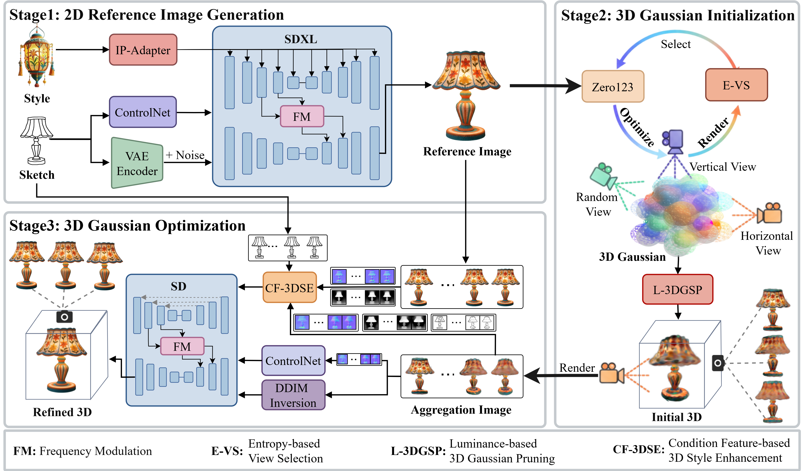

SketchDreamer
Image Guided Sketch-driven 3D Generation with Dual-domain Style Enhancement
Sketch-driven 3D generation has gained increasing attention owing to its low professional barriers and distinctive artistic expression.
Its primary challenge lies in the inherent absence of style information in sketches, which has led mainstream works to incorporate textual prompts to supplement such information.
However, when the expected style is not well-defined, it is difficult to formulate precise and discriminative textual descriptions, thus failing to impose sufficient constraints on stylistic details.
In this paper, we present a sketch-driven 3D generation framework termed SketchDreamer, which leverages a style image to define the visual appearance.
With style images providing explicit customization targets, they also impose more stringent demands on extracting and embedding style information.
To this end, we develop a dual-domain style enhancement framework that ensures style fidelity and consistency in both 2D and 3D domains.
Specifically, SketchDreamer consists of three modules, namely 2D reference image generation module
(M2DIG), 3D Gaussian initialization module
(M3DGI), and 3D Gaussian optimization module
(M3DGO).
M2DIG integrates and enhances structural and stylistic features through a dual-cascaded UNet architecture and a frequency modulation strategy, generating a high-quality stylized reference image.
M3DGI transforms the reference image into a stable initial 3D Gaussian model by selecting high-quality views and removing Gaussian primitives with abnormal luminance distributions, thereby improving geometric reliability.
M3DGO performs iterative refinement of the initial Gaussian model in terms of cross-view consistency and stylistic fidelity by jointly leveraging geometric and stylistic features.
Extensive experiments validate that SketchDreamer consistently generates 3D assets with precise style alignment and robust cross-view consistency.

The pipeline of SketchDreamer, which is divided into three stages. In the first stage, the 2D reference image generation module (M2DIG) is used to generate a high-quality stylized reference image with structural fidelity and consistent style. In the second stage, the 3D Gaussian initialization module (M3DGI) is used to convert a stylized reference image into an initial 3D Gaussian model with basic geometric structure. In the third stage, the quality of 3D Gaussians is improved using the 3D Gaussian optimization module (M3DGO).
Qualitative comparisons between our method and Zero123 (ICCV 2023), Stable Zero123 (2023), shap-E (2023), DreamGaussian (ICLR 2024), LGM (ECCV 2024), Sketch3D (MM 2024), and Ouroboros3D (CVPR 2025). Specifically, Sketch3D-text uses text as a style prompt, while Sketch3D-image uses a style image as a style prompt. The blue box indicates the presence of multi-face problem, while the red box indicates the presence of artifacts.

Ablation Study | 2D Reference Image Generation Module
Ablation Study | 3D Gaussian Initialization Module
Ablation Study | 3D Gaussian Optimization Module
Hand-drawn Sketches and Style Diversity
If you find our work useful, please consider citing:
@article{,
author = {Dongdong Jing, Xingtao Wang, Hengyu Man, Yanfeng Gu, Xiaopeng Fan},
title = {SketchDreamer: Image Guided Sketch-driven 3D Generation with Dual-domain Style Enhancement},
journal = {},
year = {2025},
}